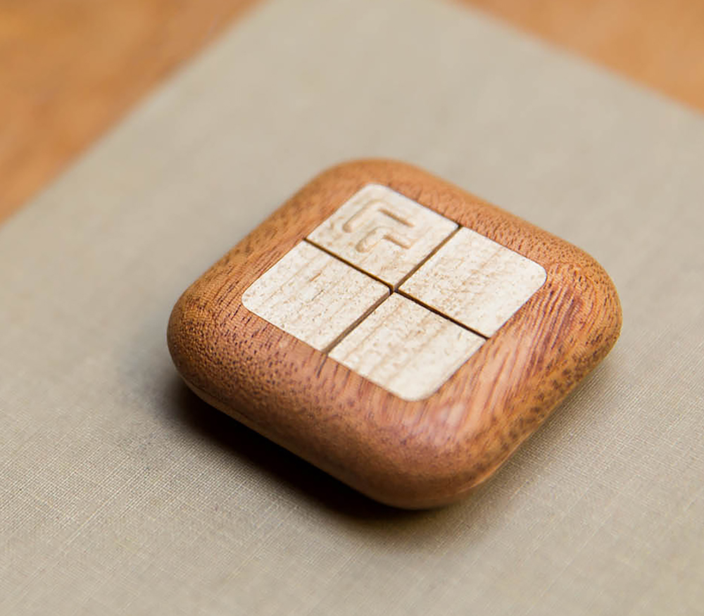
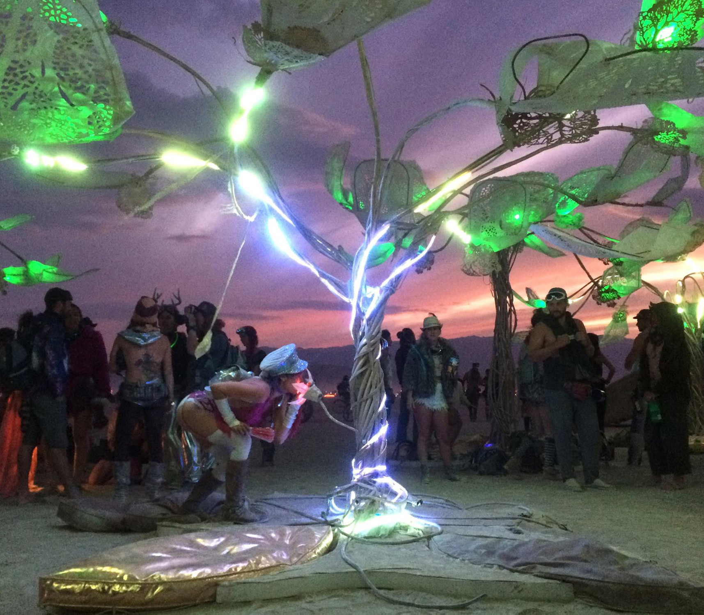
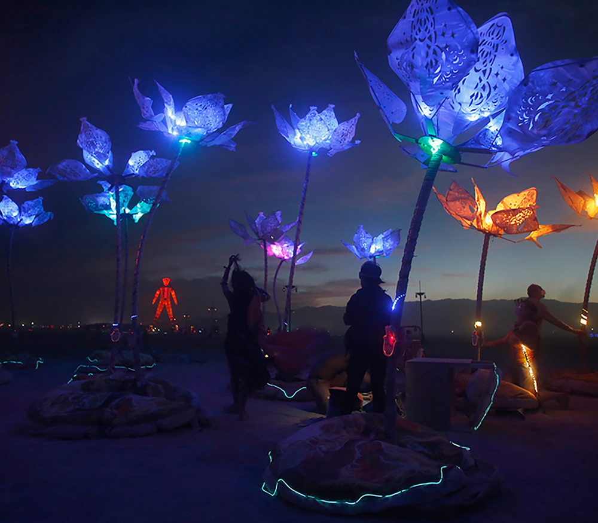
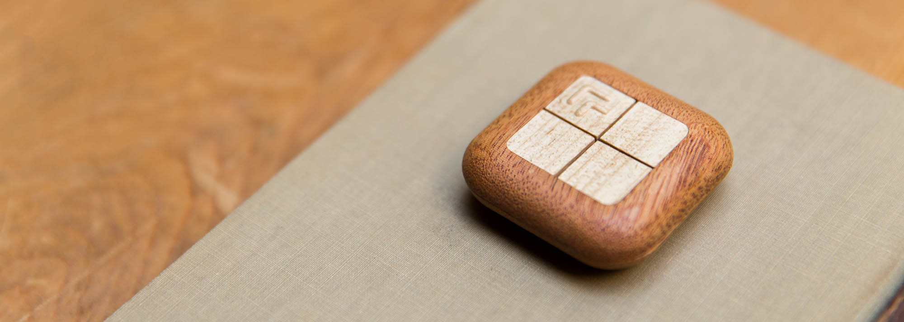
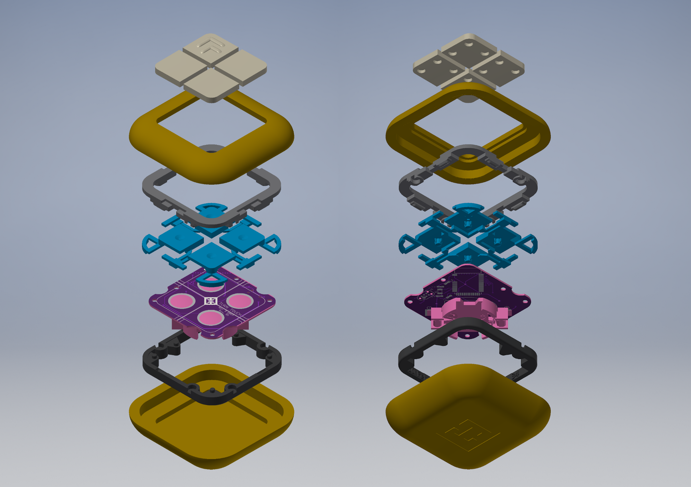
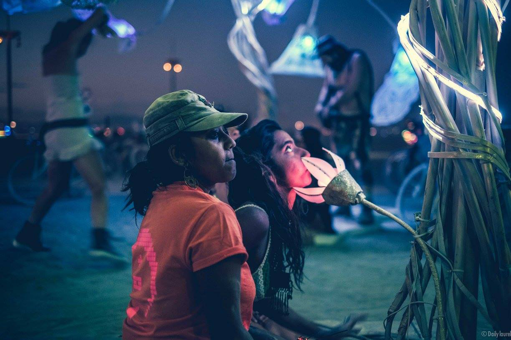
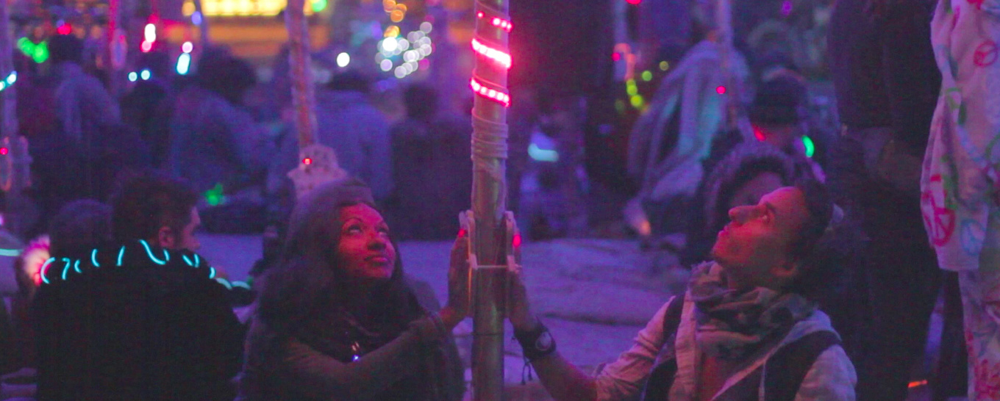

Four projects
Samuel Clay
Turn Touch
A beautiful wooden remote for all of your smart devices.
NewsBlur

A personal and trainable RSS news reader.
Grove
A conversation between humans and trees.
Pulse + Bloom
Visualize and sync heartbeats in a rhythmic pattern.
2014 - 2017
Turn Touch
 
2009 - 2017
NewsBlur


2016
Grove

Grove is a set of 10 interactive biofeedback sculptures, a conversation between humans and trees. Each tree is made of steel tubes, thousands of LEDs, and custom breathing sensors. Grove was a 2016 honorarium installation at Burning Man.
Here’s how Grove works: you sit down at the base of a tree and a flower opens up in front of you as it senses your presence. As you breathe into a pink flower lit from inside, the tree fills up with your breath, rising white streams overtaking multiple slowly descending green lines. As you breathe, the tree shimmers with light as it becomes a nighttime desert oasis.
2014
Pulse + Bloom

Pulse and Bloom consists of 20 lotuses of varying heights of 10 to 14 feet with two pulse sensors mounted on the base of the stem. When a participant places their hand upon the pulse sensor, the stem and the flower in the sky start to beat with their heart.
Furthermore, when more than one person places their hand upon the pulse sensors, the stem starts to pulse with both participants’ heartbeats, making it possible to watch how heart rates of diffrent people in intimate spaces start to beat in sync, much like fireflies flashing in patterns.
